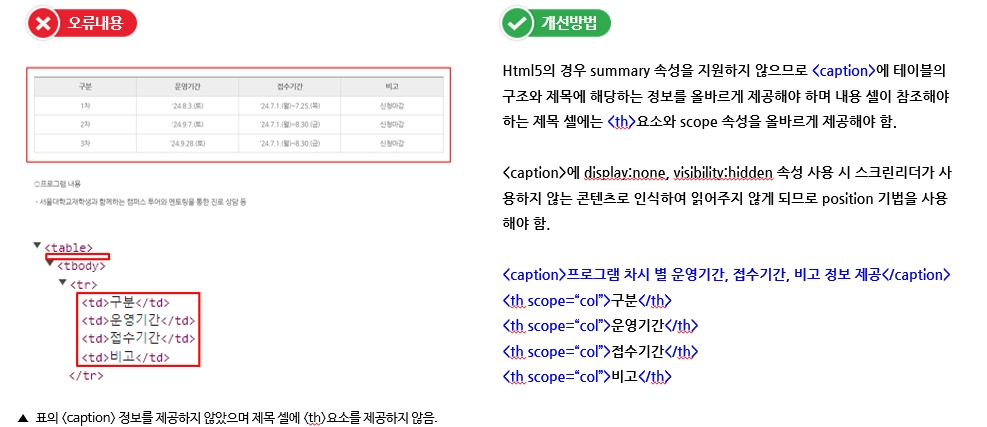
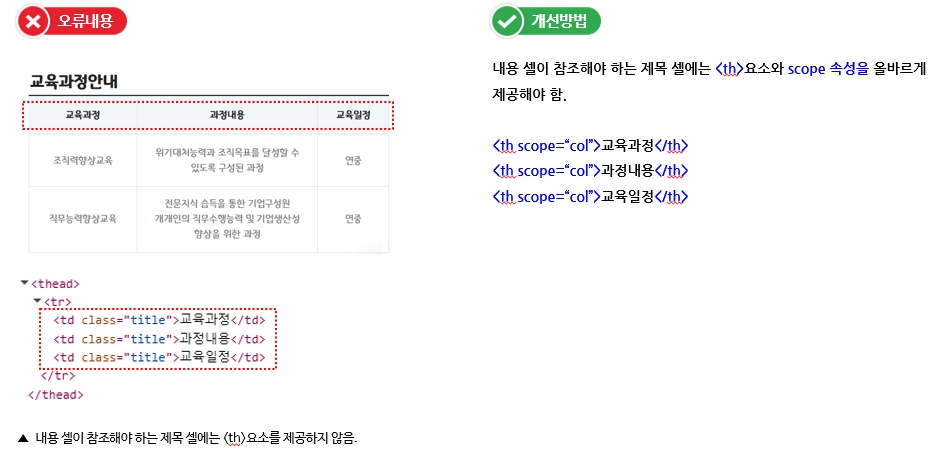
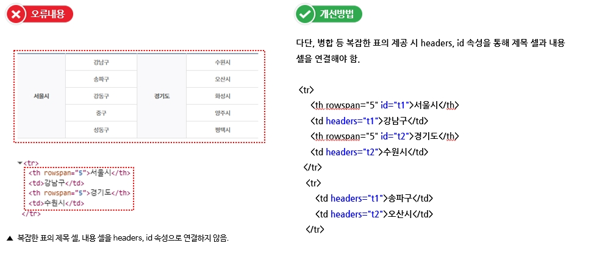
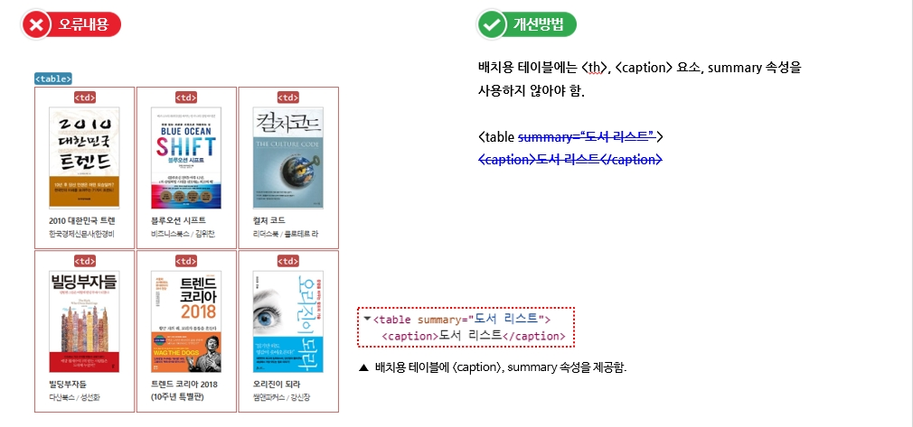
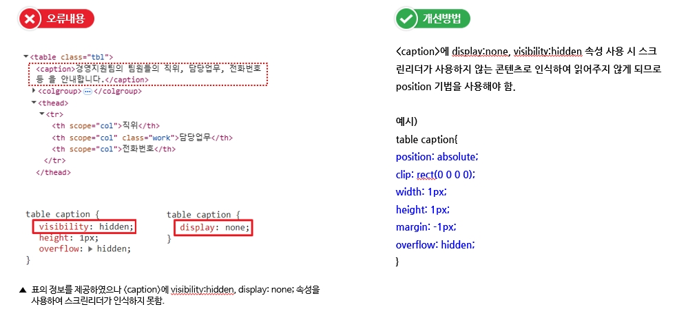
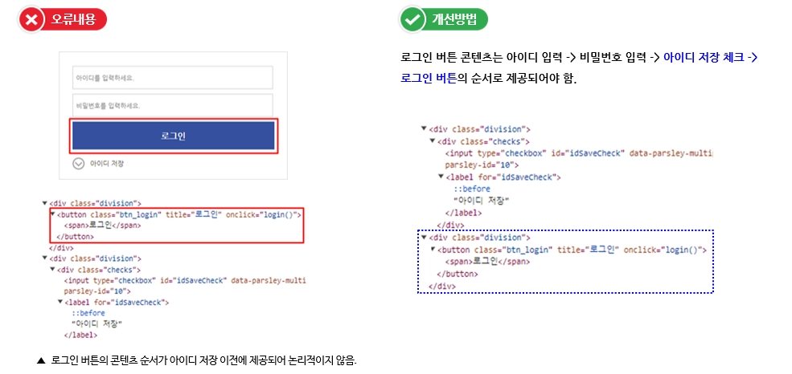
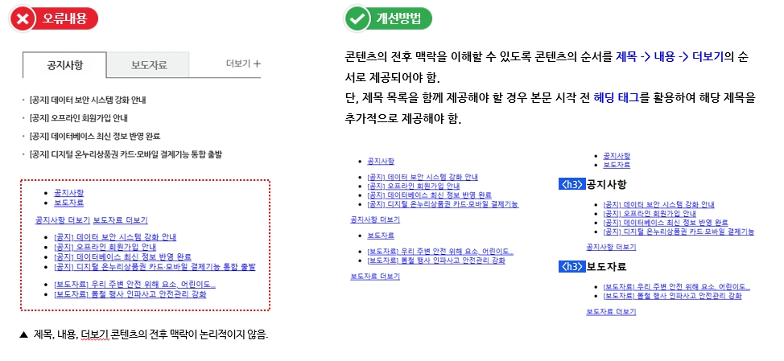
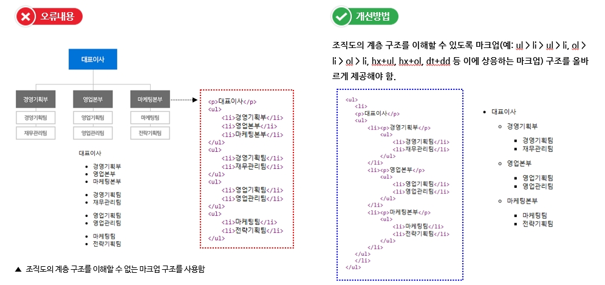
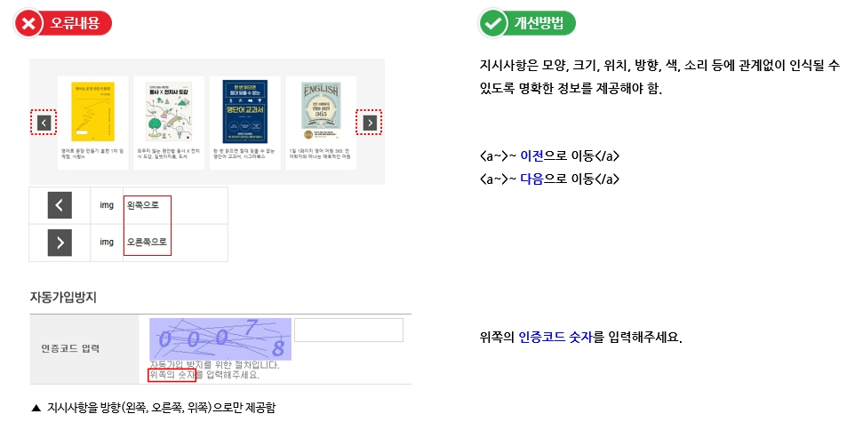

1.3 적응성
콘텐츠는 다양한 방식으로 제시될 수 있도록 구성해야 합니다.
표의 구성, 콘텐츠의 선형구조, 명확한 지시사항 제공 등 구조와 의미를 유지하면서 다양한 형태로 표현할 수 있도록 합니다.
1.3.1. 표의 구성
표는 이해하기 쉽게 구성해야 한다.
• 표의 제목과 요약정보를 제공하지 않은 경우
• 제목 셀과 내용 셀을 구분하지 않거나 잘못 구분한 경우
• 다단, 병합 등 복잡한 표의 제공 시 headers, id 속성을 통해 제목 셀과 내용 셀을 연결하지 않은 경우
• 배치용 테이블에 <th>, <caption> 요소, summary 속성을 사용하는 경우
• <caption>요소에 display:none, visibility:hidden 등과 같은 방법으로 숨겨놓은 경우
1.3.2. 콘텐츠의 선형구조
콘텐츠는 논리적인 순서로 제공해야 한다.
• 콘텐츠의 구조를 논리적으로 제공하지 않아 전후 맥락을 이해할 수 없는 경우
• 콘텐츠의 구조를 논리적으로 제공하지 않아 전후 맥락을 이해할 수 없는 경우
• 콘텐츠의 구조를 논리적으로 제공하지 않아 계층 관계를 인식할 수 없는 경우
1.3.3. 명확한 지시사항 제공
지시사항은 모양, 크기, 위치, 방향, 색, 소리 등에 관계없이 인식될 수 있어야 한다.
• 색, 크기, 모양, 방향 등으로만 정보를 제공한 경우

• 소리 등 지시사항을 청각정보로만 제공한 경우
